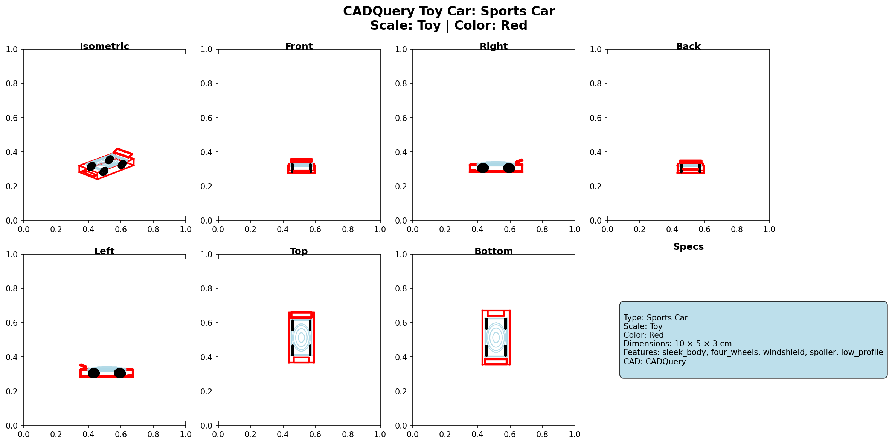

A Python tool that converts natural language descriptions into 3D CAD models, exporting industry-standard STEP and STL files alongside multi-view visualizations.
The Text-to-CAD Model Generator bridges natural language and 3D engineering design. A user simply types a description such as "Create a cylinder with radius 4 and height 12" and the tool automatically parses the intent, extracts dimensions, generates a parametric 3D model using CadQuery, and saves the result in both STEP (industry-standard CAD) and STL (3D-printing-ready) formats. A multi-view visualization — isometric, front, side, top, and composite views — is also generated automatically for each model.
The project demonstrates how natural language processing can be combined with a professional CAD kernel (OpenCASCADE via CadQuery) to lower the barrier to 3D model creation for users who are not familiar with traditional CAD software.

Composite multi-view output for a generated toy car model
Example prompts the tool understands:
The tool is structured around four loosely coupled modules:
Parser Module — Uses regex-based pattern matching to extract the shape type and all relevant dimensions from a free-form text description. It handles multiple dimension formats (e.g. 10x8x6, 10 by 8 by 6, plain space-separated numbers) and maps natural language keywords (e.g. "ball", "tube", "donut") to canonical shape names.
CAD Generator — Receives the parsed shape type and dimensions and constructs the 3D solid using the CadQuery API, which is built on top of OpenCASCADE — the same CAD kernel used by FreeCAD and other professional tools.
Visualizer — Renders the generated solid from six orthographic and isometric viewpoints using matplotlib's 3D axes, then stitches them into a single composite image for quick review.
File Manager — Saves the model to a timestamped output folder containing the STEP file, STL file, composite visualization PNG, and a JSON metadata file recording the original prompt and parsed parameters.
The tool successfully generates valid, printable 3D models from plain English descriptions across five shape families, producing professional-grade STEP files alongside STL meshes ready for 3D printing. Multi-view visualizations allow users to verify model geometry instantly without opening a CAD application.
Planned future enhancements include support for complex assemblies and boolean operations (union, difference, intersection), integration with AI language models for richer natural language understanding, a web-based interface, and the ability to import and modify existing CAD files.